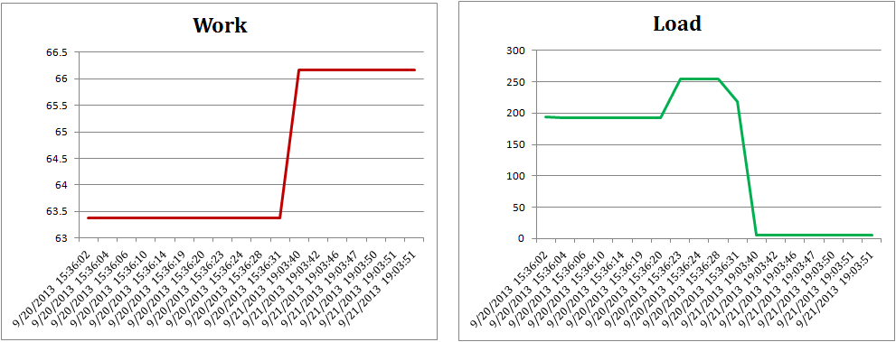

The ACM DEBS 2014 Grand Challenge is the fourth in a series of challenges which seek to provide a common ground and evaluation criteria for a competition aimed at both research and industrial event-based systems. The goal of the Grand Challenge competition is to implement a solution to a problem provided by the Grand Challenge organizers. The DEBS Grand Challenge series provides problems which are relevant to the industry at large. DEBS Grand Challenge problems allow for evaluation of event based systems using real-life data and queries.
With this year’s challenge, we seek to demonstrate the applicability of event-based systems to provide scalable, real-time analytics over high volume sensor data. The underlying scenario stems from the smart grid domain and addresses the analysis of energy consumption measurements. Specifically, we target following problems: (1) short-term load forecasting and (2) load statistics for real-time demand management. The data for the challenge is synthesized based on real-world profiles. The profiles have been collected from a number of smart-home installations deployed in Germany.
Data
The Grand Challenge 2014 data set is based on recordings originating from smart plugs, which are deployed in private households. A smart plug plays a role of a proxy between the wall power outlet and the device connected to it. It is equipped with a range of sensors which measure different, power consumption related, values. For the purpose of the DEBS 2014 Grand Challenge a number of smart plugs has been deployed in private households with data being collected roughly every second for each sensor in each smart plug. It has to be noted that the data set is collected in an uncontrolled, real-world environment, which implies the possibility of malformed data as well as missing measurements.
For the DEBS 2014 Grand Challenge we assume a hierarchical structure with a house, identified by a unique house id, being the topmost entity. Every house contains one or more households, identified by a unique household id (within a house). Every household contains one or more smart plugs, each identified by a unique plug id (within a household). Every smart plug contains exactly two sensors:
(1) load sensor measuring current load with Watt as unit (2) work sensor measuring total accumulated work since the start (or reset) of the sensor with kWh as unit.
The schema of the base stream is following:
id – a unique identifier of the measurement [32 bit unsigned integer value]
timestamp – timestamp of measurement (number of seconds since January 1, 1970, 00:00:00 GMT) [32 bit unsigned integer value]
value – the measurement [32 bit floating point]
property – type of the measurement: 0 for work or 1 for load [boolean]
plug_id – a unique identifier (within a household) of the smart plug [32 bit unsigned integer value]
household_id – a unique identifier of a household (within a house) where the plug is located [32 bit unsigned integer value]
house_id – a unique identifier of a house where the household with the plug is located [32 bit unsigned integer value]
Comma separated snapshot of the data:
2967740693,1379879533,82.042,0,1,0,12 2967740694,1379879533,105.303,1,1,0,12 2967740695,1379879533,208.785,0,2,0,12 2967740696,1379879533,217.717,1,2,0,12 2967740697,1379879533,2.207,0,3,0,12 2967740698,1379879533,2.081,1,3,0,12 2967740699,1379879533,0,1,3,1,12 2967740700,1379879533,0.313,0,3,1,12 2967740701,1379879533,0,1,3,2,12
The synthesized data file contains over 4055 Millions of measurements for 2125 plugs distributed across 40 houses. The collected measurements cover a period of one month with the first timestamp equal to 1377986401 (Sept. 1st, 2013, 00:00:00) and the last timestamp equal to 1380578399 (Sept. 30th, 2013, 23:59:59). All events in the data file are sorted by the timestamp value. Events with the same timestamp are ordered randomly with respect to each other.
Work values are cumulative. The resolution of the work values is only 1 kWh and a change in only visible when enough measurements have accumulated. Therefore, load values are better suited for capturing smaller amounts of used energy. Below figure, shows the load and work charts for a plug during the same time interval. The load chart shows an increase from 200W to 250W between 15:36:02 and 15:36:24. This is not visible in the work chart as the resolution is too small to reflect this change. Work values are calculated even if the data transmission is interrupted. Therefore, below figure shows a jump in the work values after the data gap between 9/20/2013 15:36:31 and 9/21/2013 19:03:40 although no load measurements are available during this period.

Data must be consumed in a streaming fashion. This means that the system processing currently an event with timestamp ts can only work with events with timestamps smaller or equal to ts, .i.e., those it has already seen. Specifically, no precomputation based on the whole data set must be made.
A small (approx. 500MB) test file is available under this link. It contains 100 million events for the first 16 hours. The complete data file is available upon explicit request via an FTP server. In order to obtain the data file please first register your abstract with the EasyChair and subsequently contact us at Zbigniew.Jerzak_at_sap.com to obtain the URI and credentials. The sha1sum of the full data file is: f1cb3fc60604f6c8abde7fbc21a0f59f7a510add
Query 1 – Load Prediction
The goal of this query is to make load forecasts based on the current load measurements and a model that was learned over historical data. Such forecasts can be used in demand side management to proactively influence load and adapt it to the supply situation, e.g., current production of renewable energy sources.
Specifically, the query should provide a forecast of the load for (1) each house, i.e., house-based and (2) for each individual plug, i.e., plug-based. The forecast for each house and plug should be made based on the current load of the connected plugs and a plug specific prediction model.
Note that this question does not target the prediction model itself. Instead we aim at sophisticated interplay between modules for model learning that operate on long term (historic) data with components that use the model on live data. Therefore, we suggest a following slice-based prediction method. We divide the whole period (from t_{start} = September 1st, 2013, 00:00:00 till t_{end} = September 30th, 2013, 23:59:59) covered by the Grand Challenge data set into N slices of equal size |s| seconds. We assume that the first slice s_0 has an index of 0 (zero). The start of the slice s_i is given as a timestamp ts_{s_i}^{start} with second precision equal to t_{start} + i*|s|. The end of the slice s_i is given is given as a timestamp ts_{s_i}^{end} with second precision equal to t_{start} + ((i+1) * |s|) – 1. Assuming the timestamp ts of the current event belongs to the slice s_i (ts \in [ts_{s_i}^{start}, ts_{s_i}^{end}]) the model determines prediction for the load value L for the whole slice s_{i+2} as follows:
L(s_{i+2}) = ( avgLoad(s_i) + median( { avgLoad(s_j) } ) ) / 2
where avgLoad(s_i) is the current average load for slice s_i. The value of avgLoad(s_i), in case of plug-based prediction, is calculated as the average of all load values reported by the given plug with timestamps \in s_i. In case of a house-based prediction the avgLoad(s_i) is calculated as a sum of average values for each plug within the house. { avgLoad(s_j) } is a set of average load values for all slices s_j such that:
s_j = s_(i + 2 – n*k )
where k is the number of slices in a 24 hour period, n is a natural number with values between 1 and floor((i + 2)/k). The value of the { avgLoad(s_j) } is calculated analogously to avgLoad(s_i) in case of plug-based and house-based (sum of averages) variants.
Let us consider the following plug-based example which assumes a slice size of 15 minutes. The latest event has a time stamp indicating Thursday 00:25:00 and the first event in the data set has a timestamp of Monday, 00:00:00. For this example we assume that we receive a load event for a given plug every second on the second. Let us further assume that historical average load values for the given plug for the time between 00:45:00 and 01:00:00 are given as Monday=9, Tuesday=3, and Wednesday=7.
The current average load value for the given plug on Thursday for a slice s_i starting at 00:15:00 (ending at 00:30:00) equals 8. The load forecast for the slice s_{i+2}, which starts on Thursday at 00:45:00 and ends at 01:00:00 is given by:
L(s_{i+2}) = ( 8 + median( 9, 3, 7 ) ) / 2 = 7.5
The above example assumes that the first event has a timestamp of Monday 00:00. Hence the index i of the current slice s_i (Thursday 00:15:00 till 00:30:00) equals 3*96+1 = 289. Index of slice i+2 (Thursday 00:45:00 till 01:00:00) equals 291. The set {s_j} equals hence {s_195, s_99, s_3} since s_195=s_(291-1*96), s_99=s_(291-2*96), and s_3=s_(291-3*96). s_195 corresponds to Wednesday 00:45:00 till 01:00:00. s_99 corresponds to Tuesday 00:45:00 till 01:00:00 and s_3 corresponds to Monday 00:45:00 till 01:00:00.
The load prediction query must provide prediction values for both (1) houses and (2) individual plugs. For each house and plug a prediction using a different slice sizes should be calculated. Slice sizes to consider are 1min, 5min, 15min, 60min and 120min. The output streams for house-based prediction values should adhere to the following schema:
ts – timestamp of the starting time of the slice that the prediction is made for
house_id – id of the house for which the prediction is made
predicted_load – the predicted load for the time slice starting at ts
The output streams for plug-based prediction values should contain the following information:
ts – timestamp of the starting time of the slice that the prediction is made for
house_id – id of the house for where the plug is located
household_id – the id of the household where the plug is located
plug_id – the id of the plug for which the prediction is made
predicted_load – the predicted load for the time slice starting at ts
The output streams should be updated every 30 seconds as specified by the input event timestamp. The purpose of the update is to reflect the latest value of the avgLoad(s_i) for the given slice.
Query 2 – Outliers
The goal of the outliers query is to find the outliers as far as the energy consumption levels are concerned. The query should answer the following question: for each house calculate the percentage of plugs which have a median load during the last hour greater than the median load of all plugs (in all households of all houses) during the last hour. The load statistics query should generate two output streams, one for a sliding window of one hour (described above) and one for a sliding window of a whole day (24 hours). The size of the window should be determined by the timestamp (ts) contained in every event. The slide of the window is equal to one second. The value of the aggregation should be re-calculated whenever a new event enters or leaves a sliding window.
The output streams should adhere to the following schema:
ts_start – timestamp indicating the start of the window
ts_stop – timestamp indicating the end of the window
house_id – the id of the house for which the calculation was done
percentage – the percentage of plugs in this house having their median load higher than global median
An output should be produced only when the percentage value changes for any of the houses. Specifically, no new output needs to be produced when the median load of all plugs changes but no new plugs move below or above the global median load.
Implementation and Evaluation
Each Grand Challenge solution must include an evaluation section. The evaluation section should investigate following aspects of the proposed solution:
(1) Per query throughput as a function of the workload for 10, 20, and 40 houses (average, 10th and 90th percentile)
(2) Per query latency as a function of the workload for 10, 20, and 40 houses (average, 10th and 90th percentile)
(3) For distributed systems – per query throughput and latency as function of the number of processing nodes
Please note that evaluation should explicitly focus on providing these relative values, i.e., throughput for 10 houses as compared to the throughput for 20 houses. Specifically, the absolute throughput and latency values are of minor importance only and will be used only as a sanity check against the baseline.
The original data file can be pre-processed and split into three separate input files containing 10, 20, and 40 houses. The 10 house data file should contain houses with ids from 0 till 9, and the 20 house data file should contain houses with ids from 0 till 19. Authors are furthermore explicitly encouraged to emphasize following aspects of their solutions: (1) the training and execution of the prediction model and (2) handling of potential data quality issues.
Submission Information
All DEBS 2014 Grand Challenge submissions must be composed of two parts: (1) a 6 page paper, in ACM SIG proceedings format, outlining the solution, highlighting its innovative aspects and presenting the evaluation and (2) a demonstration of the system – either in the form of a video or a screencast. All submissions are subject to a peer review process. Based on the review process a submission can be either accept or rejected. All accepted submissions will be divided in two groups. Top accepted submissions (group one) will be published in the conference proceedings and will be presented during a special Grand Challenge session. All accepted submissions (group one and two) will be invited to present the solution as a poster/demo during the DEBS 2014 Conference.
Unless explicitly declined by the authors, all solutions will be included in the global ranking with the winner of the Grand Challenge being announced and awarded during the conference banquet. The global ranking is based on the peer review process scores and the non-functional properties of the solution. The considered non-functional properties are: scalability, throughput, and latency of the system under the assumption of result correctness. The submission process is divided into two steps:
Step 1 – until February 1st, 2014 – submission of non-binding intent for participation. The goal of this submission is to initiate the contact between the DEBS Challenge organizers and solution authors. Registered authors will be proactively notified about any questions and resulting changes to the Grand Challenge description. The submission of the intent should be done via EasyChair (abstract submission).
Step 2 – until March 7th, 2014 – submission of the final solution
DEBS Challenge participants are encouraged to contact Challenge organizers with questions and suggestions regarding the problem. Main contact points for are: Zbigniew Jerzak (Zbigniew.Jerzak_at_sap.com) and Holger Ziekow (hziekow_at_agtinternational.com). All questions and answers will be made available online on the DEBS Challenge website.
All submissions are to be made via EasyChair system: https://www.easychair.org/conferences/?conf=debs2014 in the Grand Challenge track.
Unlike research track submissions, the DEBS Grand Challenge track submissions do not have to be anonymized.
Changelog
2014.02.18 – Updated the Implementation and Evaluation Section – clarified that the 10, 20 and 40 houses data sets can be preprocessed. Clarified the importance of relative and absolute values in evaluation.
2014.02.10 – Updated the description of Query 1 highlighting the result update strategy.
2014.02.07 – Extended the explanation of the calculation of the slice number s_j in Query 1. Added an explanation to the data section clarifying the consumption mode for the input data file.
2014.02.03 – Added new question (number 3) regarding the update semantics of the load prediction value.
2014.02.02 – Updated (clarified) description of Query 1
2014.01.30 – Updated description of the data file adding the first and last timestamps
2014.01.17 – Updated description of Query 2 – the slide size of time based windows equals one second and the calculation of the aggregate should be triggered by every event
2014.01.16 – Updated submission information clarifying that the GC track submissions need not be anonymized
2014.01.15 – Updated description of Query 2 with precise definition of a slide size and the median load for all plugs
2014.01.14 – Updated description and result schema of Query 2
Q&A
- Query 2 – How are both windows (for one hour and for a whole day) computed? More precisely, are both windows sliding or tumbling?
Both windows are to be considered as sliding windows with the window span determined by the timestamp field (ts) in the input data. - Query 2 – How often should sliding window produce a result?
Each sliding window should update its result whenever the value of the calculated aggregation changes, i.e., usually upon the reception of every input event. - Query 1 – how should the prediction of the load value be updated?
Please note that the load prediction equation contains two terms. The current average load value avgLoad(s_i) and the historical value obtained from the model median( { avgLoad(s_j) } ). While the model-based value stays constant the current average changes with every new event entering the slice s_i. Therefore, the load prediction value should be updated with every new event entering the slice s_i.
Grand Challenge co-Chairs
Zbigniew Jerzak, SAP AG
Holger Ziekow, AGT International
Grand Challenge Technical Program Committee
Mauricio Arango – Oracle, USA
Thomas Heinze – SAP AG, Germany
Helge Parzyjegla – University of Rostock, Germany
Leonardo Querzoni – Universit degli Studi di Roma “La Sapienza”, Italy
Etienne Rivière – University of Neuchatel, Switzerland
Marco Serafini, QCRI – Qatar Foundation, Qatar
Matthias Weidlich – Imperial College London, UK